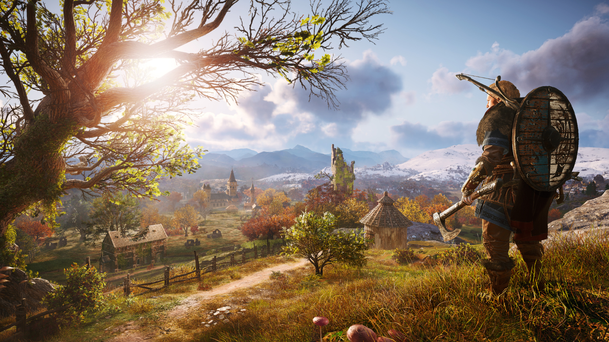
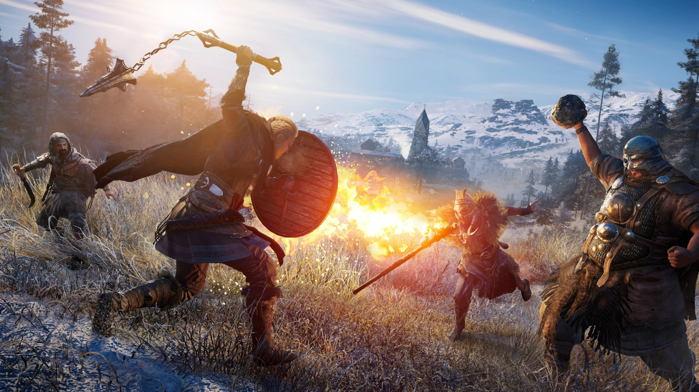
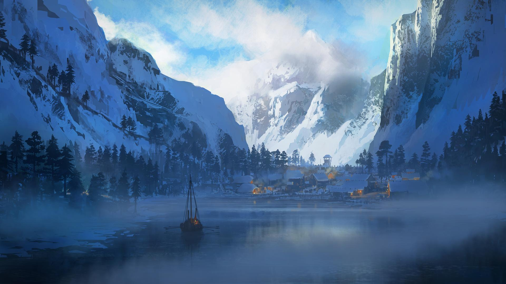
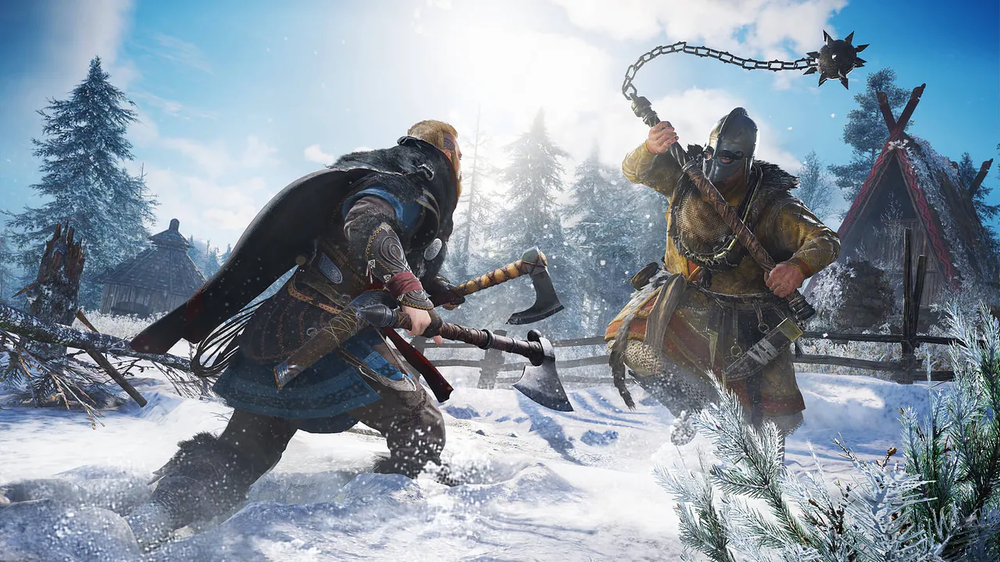

Assassin's Creed Valhalla is an open-world action game set  in the realities of the Viking Age. The player assumes the role of Eivor, a Viking who leaves Norway with his family to settle in England. During the game we will explore different regions of England, fight enemies, build our settlement and interact with characters from all over the world.\
The game offers many new features, including the ability to choose the gender of the character, which  allows the player to further personalize the game experience. We will also find new combat mechanics, such as a system of skills and abilities, as well as new ways to fight, such as stealth attacks and stealth.Assassin's Creed Valhalla features beautiful, expansive and varied landscapes that provide incredible adventure and exploration. The player will have the opportunity to visit legendary places from the Viking Age, such as York or London. With the growing population of the settlement, we will have the opportunity to expand and improve our headquarters, adding new buildings and improving the existing ones.The storyline of Assassin's Creed Valhalla is full of intrigue, politics and mystery that captures players' attention and keeps them in suspense throughout the game. Assassin's Creed Valhalla is a game that offers plenty of  entertainment while allowing players to feel like Vikings as they conquer new territories, fight for their goals and lead their settlement to greatness and power. We will also find new combat mechanics, such as a system of skills and abilities, as well as new ways to fight, such as stealth attacks and stealth.